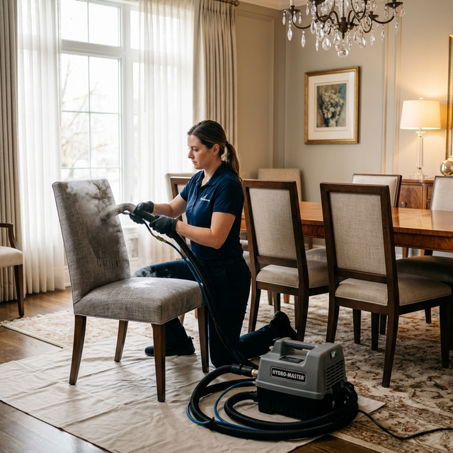

Professional Chair Upholstery Cleaning in Melbourne
Chairs are some of the most frequently used — yet most overlooked — pieces of furniture when it comes to professional cleaning. Dining chairs collect food spills and cooking grease at every meal. Armchairs absorb body oils and sweat from daily use. Accent chairs sit in corners gathering dust and pet hair. Office chairs harbour bacteria and perspiration from hours of daily sitting.
At BABA Cleaning, our chair cleaning Melbourne service is specifically designed to tackle the unique challenges each chair type presents. We carefully assess the material — whether it's cotton, linen, velvet, microfibre, mesh, or leather — and apply the most effective cleaning method for that specific fabric. The result is chairs that look vibrant, feel fresh, and are hygienically safe for your family, guests, or employees.


How We Clean Your Chairs
Each chair receives an individualised cleaning treatment based on its material, construction, and condition:
- Material identification — We determine whether your chair is cotton, linen, velvet, microfibre, mesh, synthetic, or leather — and choose the safest method
- Focused stain treatment — Food, grease, ink, and drink stains are individually pre-treated with targeted solutions
- Steam or low-moisture clean — HWE steam extraction for durable fabrics; dry/low-moisture techniques for delicate or moisture-sensitive materials like velvet and silk
- Armrest & headrest attention — High-contact areas receive extra treatment to remove body oil build-up and discolouration
- Sanitisation — Anti-bacterial treatment kills germs, dust mites, and allergens — especially important for shared seating
- Optional stain guard — Protective coating to resist future spills and keep your chairs cleaner for longer
Chairs We Clean — Home & Commercial
From a single accent chair to hundreds of restaurant seats, we have the experience and equipment to handle it all:
Dining Chairs
Remove food stains, grease, and everyday grime from your complete dining set.
Armchairs & Recliners
Deep cleaning of seats, armrests, headrests, and side panels — the areas that absorb the most wear.
Accent & Occasional Chairs
Restore decorative chairs that collect dust and look tired over time.
Office & Desk Chairs
Fabric, mesh, and leather office chairs sanitised and refreshed for a healthier workspace.
Nursing & Rocking Chairs
Gentle, residue-free cleaning for nursery furniture — safe for babies and infants.
Restaurant & Hotel Seating
Bulk pricing for hospitality venues — after-hours service available with zero disruption.
Chair Cleaning FAQ
How much does chair cleaning cost?
Pricing depends on the chair type, material, and condition. Dining chairs are typically per-chair, while armchairs and recliners are priced individually. Contact us for a free, no-obligation quote — we'll give you exact pricing before we start.
Can you clean chairs at my restaurant or office after hours?
Absolutely. We offer after-hours, weekend, and early-morning cleaning for commercial clients. Your business operates uninterrupted while we handle the cleaning.
Will steam cleaning damage delicate fabrics like velvet or silk?
No. We use specialised low-moisture and dry-cleaning techniques for delicate materials. We always test a hidden area first and adjust our method to ensure zero damage.
How quickly can I use my chairs after cleaning?
Chairs dry faster than larger furniture due to their smaller surface area — typically 1–2 hours. Dining chairs are often ready in under an hour.
Do you offer bulk discounts for multiple chairs?
Yes! We offer attractive per-chair rates when you book a full dining set, office floor, or restaurant. The more chairs, the better the rate — ask us for a custom quote.
Every Chair Deserves a Deep Clean!
From a single accent chair to a full restaurant floor, BABA Cleaning has the equipment and expertise. Call us for a free quote and give your chairs the refresh they deserve.